Tutorial 1 – Hello world for a simple client/server application
Contents:
Preface
Objectives
Create client and server skeleton codes with the tool uidparser.exe
Server side development
Responsibilities of main thread within SocketPro server
Client side development
· Async handler
· Serialization of complex structures and interface IUSerilizer for .NET, Java and Python
· Synchronous and asynchronous requests as well as requests batching for the best network efficiency
· Client side persistent message queue
Async/Await for asynchronous tasks
Cross-platform and cross-development language tests
1. Preface
SocketPro, a communication framework, is written with requests batching, asynchrony, and parallel computations in mind by use of raw non-blocking TCP/IP socket. The framework is considerably different from common communication frameworks like Java RMI, WCF, and web service. SocketPro offers many specific features which cannot be found in other frameworks. Therefore, we have created a series of tutorial samples to assist your development. As you study these samples, it is strongly recommended that you fully understand every one of the features and code comments while experimenting with them. All of the tutorial samples are written with C++, C#, VB.Net, Java and Python languages. Each of the samples contains one console server application and at least one client application for each of these development languages. We’ll add supports to other development language in the near future.
Many development languages have been enhanced to better support asynchronous computation by use of Lambda expressions, anonymous delegate/function and async/await. Therefore, as you will see, new SocketPro client side adapters are rewritten and improved to fully take advantages of these new features for supported languages.
To get used to SocketPro fast, you must keep in mind that SocketPro uses asynchronous and request batching computation by default. Once you are used to SocketPro computation models, you will like the power of SocketPro!
To maximize tutorial code reusability, all of tutorial projects may refer to files inside other project directory, dependent on each of tutorial project types like C++, C#, Java, VB.NET, Python and window CE .NET. At this writing time, there are six solution files for the six development environments, and each of development language solutions contains all of available tutorial projects. These solutions are:
|
Dev. language |
Solution file path |
IDE tools |
|
C++ |
..\SocketProRoot\tutorials\cplusplus\cplusplus.sln |
Visual studio 2010 only. No solution file for Linux |
|
C# |
..\SocketProRoot\tutorials\csharp.csharp.sln |
Visual studio 2010 and MonoDevelop 3.0 later |
|
VB.Net |
..\SocketProRoot\tutorials\vbnet\vbnet.sln |
Visual studio 2010 only |
|
Java |
..\SocketProRoot\tutorials\java\nbproject |
Netbean 8.0 or later for both windows and linux |
|
C# for wince |
..\ SocketProRoot\tutorials\ce\ce.sln |
Visual studio 2008 only |
|
Python |
..\SocketProRoot\tutorials\python\.idea |
PyCharm |
2. Objectives
Understand a uid (universal interface definition) file, and use it with SocketPro tool uidparser.exe to quickly create skeleton codes for both client and server.
This very first sample is designed to quickly create a service
that processes the following three requests with traditional client/server
communication model.
· Create a hello message at server side and return the message back to a client with two inputs first and last names.
· Send a sleep request from a client to a server so that a server will sleep for a given time. As you can see, the request may take a longer time to complete. Therefore, the request will be processed within a worker thread so that it will not block processing requests from other clients.
· Echo a complex structure between a client and a server. This request demonstrates how to exchange a complex structure across applications which may be created from different development languages or platforms within SocketPro framework.
· Convert asynchronous requests into synchronous ones with SocketPro client method WaitAll.
· Process multiple requests in batch to improve the underlying network efficiency for better application performance and scalability.
· Use Lambda expressions at client side for tracking various common events at client side as well as processing request return results.
· Use SocketPro persistent message queue at client side to improve communication stability over instable communication environments and software maintenance.
· Override server side virtual functions to track server communication events.
Finally, the tutorial demo projects are located at the directory of ..\tutorials\(csharp|vbnet|java|cplusplus|ce|python)\hello_world.
3. Create client and server skeleton codes with uidparser.exe
SocketPro comes with a code generator to write skeleton client and server codes from a given universal interface definition file with file extension uid. It is very similar to other interface definition files like COM and CORBA. Take this sample, its uid file contains the below code.
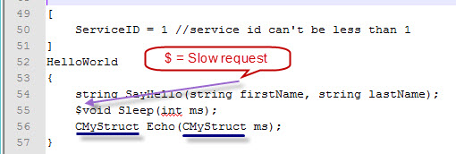
Figure 1: A sample universal interface definition.
In regards to the correct use of uidparser.exe, please see detailed comments inside file HW.uid. There is no need to re-describe the various simple rules in this tutorial again. However, you must be clear if a request takes a long time to process. Take this sample as an example, the request Sleep may require a long time to process, and all of other two requests will require very little time to be completed. Put the char ‘$’ before the return value to indicate a request to be slow as labeled in the picture above.
In addition to common data types, the tool also supports complex data structures. Take this sample as an example. The complex structure is CMyStruct as underlined in the above image. Note that this file is actually located at the directory ..\ SocketProRoot\tutorials\(csharp|cpluplus|vbnet|java\src|ce|python)\uqueue_demo
Note that the data types are based on C#. The tool uidparser.exe will map them to data types of supported languages. If not proper, you could just manually change data types by mapping later.
You can use the tool uidparser.exe to quickly create skeleton codes for both client and side. See the below Figure 2 for creating skeleton codes for C#, C++ and VB.NET.
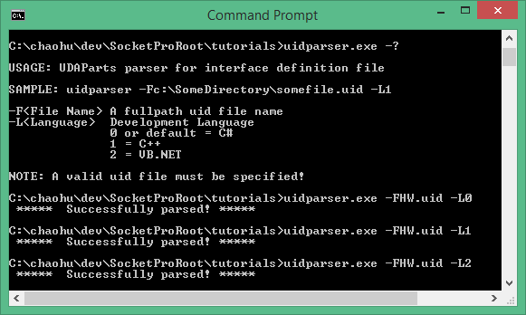
Figure 2: Create SocketPro client and server skeleton codes from a given uid file with the tool uidparser.
For this sample, the tool uidparser creates a set of files with proper file extensions for each of three development languages. Take C# as a sample. The first file named HW_i.cs contains all of the constant definitions as shown in the following figure 3.
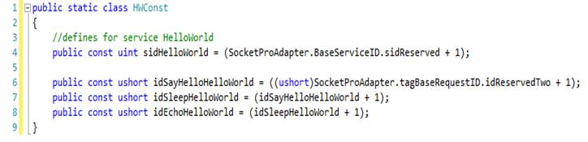
Figure 3: A sample C# file for constant definitions.
This
file will be referenced by both client and server projects. The constant sidHellowWorld
is a service id for this sample service. All of the others are identifier
numbers for three requests. SocketPro supports multiple services within one
listening socket. Each of the services must be identified by one unique
identifier number named as service id. Similarly, each of the requests, named
as request id, has one unique identification number per service.
4.
Server side development
Reference SocketPro adapter for easy development: At
the very beginning, you need to reference SproAdapter.dll if your developmental
environment is one of the dotNet languages (C# and VB.NET), or add the files membuffer.cpp
and aserverw.cpp into your C++ server project. In addition, you need to refer
to the C++ server adapter header file aserverw.h if your sever project is based
on C++.
Derive HelloWorldPeer from CClientPeer for .NET and C++: Next, the tool automatically derives a class (HelloWorldPeer) from the class CClientPeer inside the namespace SocketProAdapter.ServerSide as shown in the file hwImpl.cs and the below figure 4. SocketPro automatically manages threads for you. On the server side, SocketPro will dispatch all fast requests on one main thread for processing and all slow requests onto worker threads for processing. Note that there is only one main thread, but SocketPro server may create multiple worker threads automatically as needed on the fly.
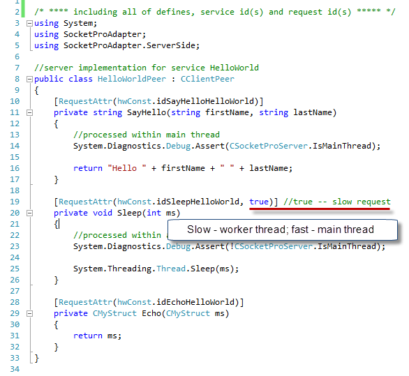
Figure 4: Server implementation for C#
As you can see from the above figure 4, SocketPro .NET server adapter uses attribute to specify if a request is slow one.
For C++, SocketPro uses two pure virtual functions OnFastRequestArrive and OnSlowRequestArrive to help you to implement all supported requests as shown in the below figure 5. As each name individually indicates, all fast requests are called from the first virtual function by one main thread, and all slow requests from the second virtual function by one of worker threads. Pay close attention to the labels on the figure for how to combine inputs and outputs at server side.
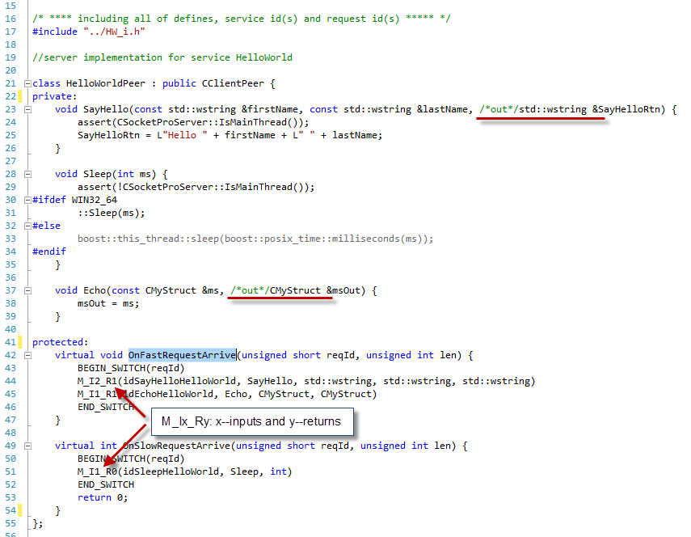
Figure 5: Server implementation for C++.
Register services and deal with slow requests for .NET and C++: SocketPro requires one to register all of the services supported at server side. For .NET development environments, you can simply specify an attribute for each of the services as shown in the below figure 6.
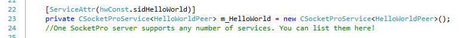
Figure 6: Register services at server side for C#.
In regards to C++ development, you can register all services within the virtual function CSocketProServer::OnSettingServer as shown in the following figure 7. Inside the function, you can call the method CBaseService::AddMe with a service id and a COM thread apartment model (ignored on non-window platforms). For this sample, they are set to sidHelloWorld and taNone, respectively. The taNone indicates a worker thread that will not be initialized into any COM thread apartment because this sample doesn’t create any COM object at all. Note that we register a slow request in C++ by calling the method CBaseService::AddSlowRequest, but we register a slow request in .NET by specifying its second parameter to true as shown in the figure 4.
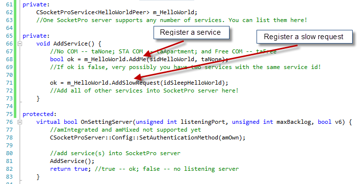
Figure 7: Register services at server side for C++.
Once you specify a request is slow one, SocketPro server will use the information to route a request onto different threads and also create a thread automatically on the fly if necessary.
SocketPro simplifies your code development at server side significantly. It manages all threads for you automatically. Usually, you will not create your own threads even though you can be assured to create your own threads. When a thread is idle for a long time, perhaps for one minute by default, SocketPro server will also silently kill it for you.
Permission to client connections: We need to control socket connections from different clients for the sake of security. You can deny or give permission to a client by its credentials (user id and password). To achieve such a goal, you can implement it by overriding the below virtual function OnIsPermitted as shown in the figure 8. If the function returns true, you give permission to a client. Otherwise, you deny the socket connection, and SocketPro will automatically close it for you.
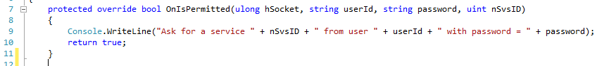
Figure 8: Authenticate a client by its user id, password and service id.
Start one listening socket per application instance: At this point, we have almost completed the server application. At last, we need a piece of code to start one listening socket per application instance as shown in the figure 9.
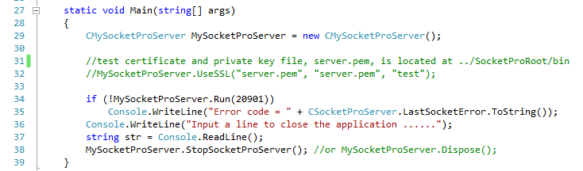
Figure 9: Start one listening socket per application instance by calling the method Run on a given port (for example, 20901).
By this time, you can compile and run the sample SocketPro server which is able to support tens of thousands of clients very easily.
Only OnSlowRequestArrive called within a worker thread: As you may have already known, SocketPro offers a simple thread model that all the virtual functions OnXXX, except the virtual function OnSlowRequestArrive, are called with one main thread.
5.
Responsibilities of main thread within SocketPro server
The main thread at SocketPro server is the thread running with the listening socket. The main thread has a lot of responsibilities. Major ones are listed in the following:
a. Monitoring various network events and communication events between worker threads and the main thread.
b. Manage various pools such as thread pools, global and private memory pools, and pools of CClientPeer-derived objects.
c. Route various slow requests onto different worker threads.
d. Process all of fast requests from all of clients.
e. Authenticate a client.
f. Decompress incoming data if it is originally compressed (zipped).
g. Decrypt incoming data if it is originally encrypted.
h. Create or kill threads on the fly if necessary.
i. Encrypt or compress returned data of all of fast requests.
j. Manage plug-in libraries written from C/C++.
k.
Find dead clients for unknown reasons.
You are not required to understand how the main thread manages these in detail. However, you should keep in mind that no slow requests should be processed in the main thread in general. Worker threads are used to process all slow requests, and to encrypt or compress their returned results.
6. Client side development
SocketPro has one client system library, usocket.dll on window platforms or usocket.so on Linux platforms, which must be used for all of client applications development. In addition, SocketPro uses openssl libraries for SSL/TLS secure communication. In order to reduce client coding complexities, SocketPro provides wrappers. To use these helpful wrappers, simply use the name spaces SocketProAdapter and SocketProAdapter.ClientSide.
Async handler – is designed for sending requests and processing returning results using asynchrony style. However, you can easily convert all asynchronous requests and results into synchronous ones. SocketPro client adapter also provides templates in C++ or generics in .NET to convert them as shown in the below Figure 10 if you like to use synchronous computation style with help of the functions ProcessRx, where x indicates the number of returning results which could range from 0 to 5.
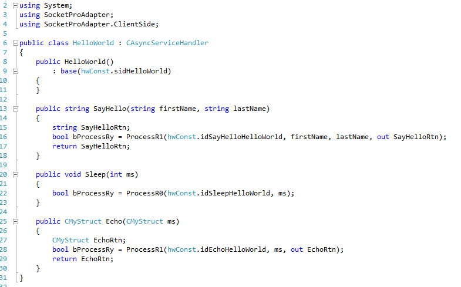
Figure 10: Hello world asynchronous service handler for C#
Serialization of complex structures and interface IUSerilizer for .NET – SocketPro adapter can automatically serialize and de-serialize simple data types easily effortlessly. However, it requires a little effort for you to implement the interface IUSerialize for .NET if you would like your application data movement to be compatible across multiple platforms and development languages C++, C#, and others. For details, see this short article and this sample tutorial code. Note SocketPro also supports .NET serialization. We recommend IUSerilize for the sake of performance and compatibility across different operation systems and developmental languages.
Synchronous and asynchronous requests as well as requests batching for the best network efficiency – Let’s see the Hello world client code as shown in the below Figure 11.
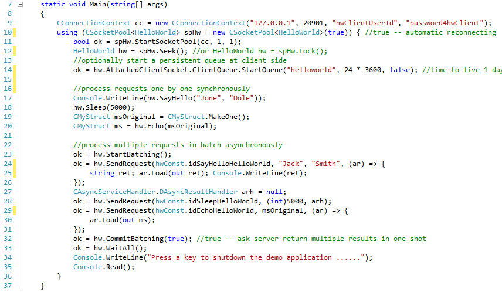
Figure 11: Client main codes for sync and async requests as well as requests batching
At first, SocketPro client requires a connection context for establishing socket connection from client to server as shown on the line 9. Next, SocketPro client starts a pool of sockets on the lines 10 and 11 with a number of threads for hosting non-blocking sockets. Here, we just create a single socket hosted within one thread only.
From line 17 through line 20, we send three requests synchronously, which costs three round trips to finish processing all three requests. Typically, developers just write such synchronous requests. However, we are able to send all three requests in one shot with only one round-trip after manually batching them. Each of the requests is set with one call back for processing returning results as shown in the lines 25, 28 and 30. This is requests batching with asynchrony computation style. The key feature is especially great for middle tier performance and scalability in case your application requires supporting high volume of requests over low bandwidth networks remotely. Note the calls at lines 23, 32 and 33 are optional. Without calls at lines 23 and 32, SocketPro is still able to do requests batching, but manual batch is slightly better. The call WaitAll at line 32 is used to wait until all three requests are processed.
Client side persistent message queue – The call at line 14 starts a persistent message queue if you like to make sure all of the client requests are delivered to remote server, no matter what happens to the remote server, network or client machine. In case the network or server is down for any reasons such as network unplug, machine power-off, software update, server shutdown, and so on, the client requests are automatically backed up by the client side. The backup requests can be re-sent to server for processing after a remote server is restored to work.
After you run the Hello world server first, you can start running the simple client sample and step through codes now.
7. Async/Await
If you do .NET development, you may like to use the new feature Async/Await for asynchronous tasks. SocketPro well- supports the new key statements Async and Await for all requests without the involvement of .NET thread pool or your worker thread. There is also visual studio 2012 .net sample project located at the directory ..\tutorials\(csharp|vbnet)\hello_world\win_async for both C# and VB.NET. Here is the C# code snippet for demonstration.
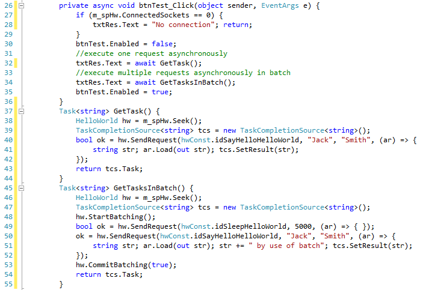
Figure 12: use Async and Await for asynchronous tasks within SocketPro client adapter
You can see how we set asynchronous results (tcs.SetResult) within Lambda expression callbacks at the codes at line 41 and 51. Note that such does not require that you use .NET thread pool or create a worker thread at all. You can just use the thread-less task approach for all requests one-by-one or in a batch.
8. Cross-platform and cross-development language tests
SocketPro is created to fully support cross-platform and cross-language developments. For example, you can create a C++ Linux SocketPro server application which is directly accessible from a window client application written from C#. You can test all tutorial samples from different platforms and applications written from different languages. As you can see, SocketPro is written to support loose coupling communication architecture. Communications among clients and their server are decoupled, which is beneficial to software maintenance and evolution.